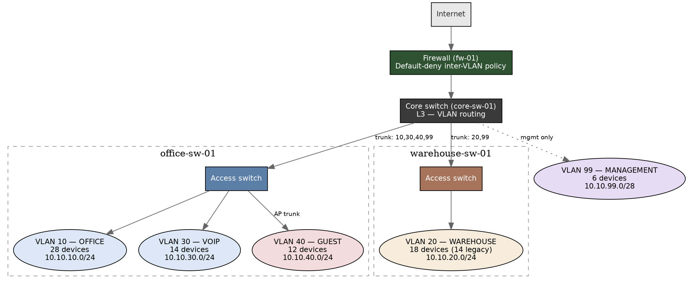

Building the Riverside branch network segmented from day one
A greenfield 78-device branch office defaults to one flat network unless someone deliberately designs otherwise. This build separates office, warehouse, VoIP, guest, and management traffic into 5 VLANs with a default-deny inter-VLAN firewall policy — before a single device is ever compromised.
Devices at go-live
78
across 5 segments
Legacy/unpatched devices isolated
14
warehouse scanners & printers, own VLAN
Worst-case blast radius reduction
64.9%
77 → 27 devices (Office VLAN)
Best-case blast radius reduction
93.5%
77 → 5 devices (Management VLAN)
Network topology
One firewall, one L3 core switch, two L2 access switches — 5 VLANs, no VLAN spans a switch that doesn't need it.

Blast radius, before vs. after segmentation
Devices reachable from one compromised device. Before = every other device on a flat network (77). After = only the devices sharing that VLAN, since inter-VLAN traffic defaults to deny.
What the firewall policy actually allows
16 numbered rules, evaluated top-to-bottom, default-deny. Every "pass" rule below names a specific host and/or port — there is no blanket VLAN-to-VLAN allow anywhere in the policy.
Guest → internal network
0 paths allowed
Guest can reach the internet (web/DNS only) and nothing else — no RFC1918 destination, ever
Warehouse → Office
1 host, 1 port
a single pinhole to the WMS integration server's API port — not "Warehouse can reach Office"
Anything → Management
1 source IP
only the designated IT jump host may reach switch/AP/firewall management interfaces, SSH/HTTPS only